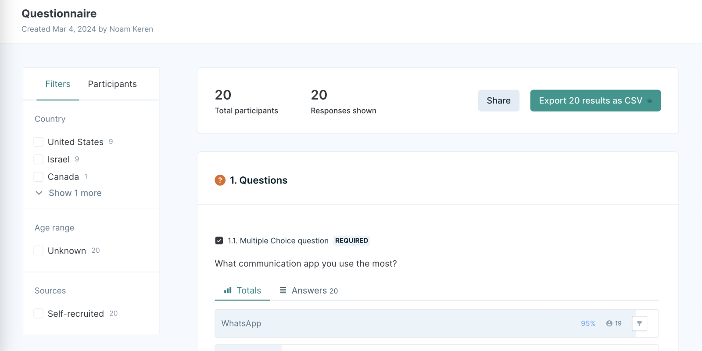
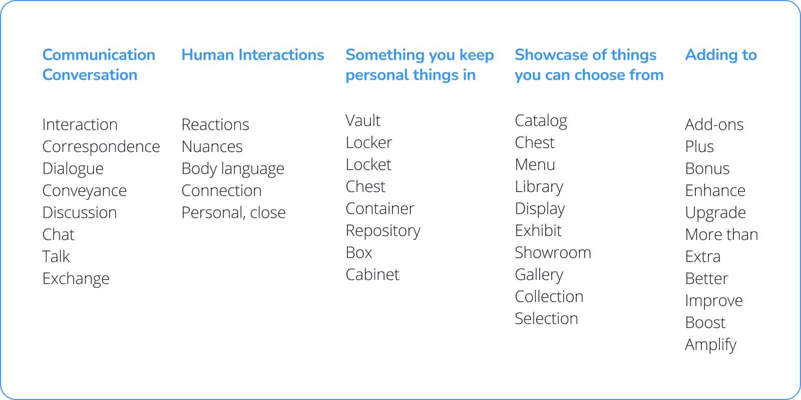
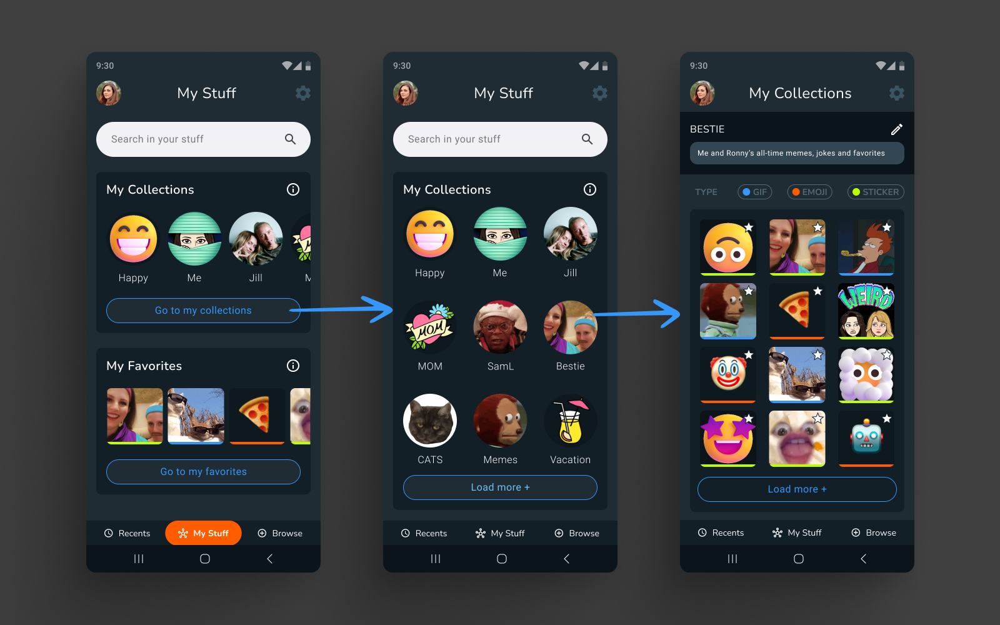

Vault
Most human communication is not composed of words; it is body language, eye contact, tone of voice and reactions. Online communication is now trying to convey this with the use of visuals such as emojis, stickers and GIFs. They are integrated on many platforms and are very easily accessible for use by all and adds texture, fun and humanity to chat.
Vault is a platform for saving, managing, creating and sharing emojis, stickers, and GIFs seamlessly across messaging apps. This was a course project with a scope of 80 hours.
Background
This project in the course was about adding a feature to an existing app, website or similar service.
My initial brief was to add an easy stickers creation feature for WhatsApp. I chose this subject since I personally use stickers in chats all the time, I think it's a fun and engaging way to express yourself and make conversations more personal. Unfortunately, I found it very inconvenient to create and manage stickers on WhatsApp.
Role: UX, UI Design
Tools: Figma, Lyssna, Adobe Photoshop
Scope: 80 hours
Research
I started my research process to learn if users share my frustrations, as well as to understand their pain points and habits using stickers on WhatsApp. However, after synthesizing my research results, I found a wider definition of the problem space and shifted my design goals in a new direction.
Goals and Methodologies
To learn more about users' use of reactions, I interviewed 20 participants by asking questions about using WhatsApp in general, using reactions, using stickers specifically, and creating custom stickers in WhatsApp.
The survey was created and shared via Lyssna.
Key Insights
Going through the survey results, two insights made me think in a wider direction:
First, most participants don't like to use stickers and prefer emojis:
- 19 out of 20 participants ranked "Emojis" as their first priority for reactions.
- Regarding using stickers in particular in chats, 10 participants (50%) said "rarely".
- 5 participants (25%) said "once in a while".
As for the reason for that, many stated it just wasn't convenient enough to use:
"I don't know why but I always forget stickers even exist"
"It's less accessible than emojis"
"It's not very intuitive"
"To be honest, I am not sure I know how"
This comment, along with others, made me rethink of what I had previously thought was the main pain point:
"When I look for an emoji, everything is organized. I know where things are, always at the same place. With stickers, it is a mess. I don't know where to find things. so much so that I don't like entering the stickers section. Maybe If it was arranged by categories, or if I could add my own labels to it, it would work better for me. I don't know how to access, view or search for my stickers".
Competitive Analysis
These are the current available options for using the three types of reactions:
- Emojis: Emojis are standardized characters, meaning they have pre-set categories. As such, users can't edit the categories or save favorites.
- GIFs: On some apps (like WhatsApp), users can use the built-in GIFs search tool to add GIFs. Additionally, third-party keyboard apps offer similar options. However, there is not a way to save favorites or create groups.
- Stickers: Some apps offer users to add and use sticker packs through the app. Additionally, they can use third-party apps to create, download and share sticker packs. However, these are app-specific (users can't easily use WhatsApp stickers on Telegram and vice versa).
Re-defining the Problem
Along with the lack of options to search and save favorite content for each of the reaction types, the bigger problem lies in the lack of integration between them:
There is not a central place where users can access and manage (save, edit, search, share) the three different types, let alone use it across other messaging apps.
Intro To Solution
The app will be a platform that enables users to efficiently save and categorize all types of reactions in one place. Users could easily view and add these reactions in every messaging app they use.
Ideation
Research results led me to outline these personas, to define users' needs, behaviors, and goals:
Why Vault?
Now that the app became a concept of its own, it needed a name. As part of the ideation process I was brainstorming different names within the core values: conversation, keepsake and addition.
A vault - being a secure storage or repository used to store valuable items or important assets - seemed like a good match.
Design
After exploring different layouts for the app, I decided it will have two states you can interact with.
Chat Mode
The first one is a floating action button that displays on top of the messaging screen. When clicked, it opens as a drawer over the chat. This was the initial design, which was later iterated and updated:

Opening the App Directly
The former option (while in a chat) offers limited options in order to quickly add reactions to the chat.
In order to edit collections and manage favorites, users need to open the app on its own.

Collections
Collections are groups of reactions. They are combined together by the user, and can be based on any subject. This allows users to personalize their communication by quickly accessing a group of reactions that suits the conversation the most, and easily adding them to the chat.
Managing Collections

Testing and Iterating
The main feedback I received from testing was that while in chat mode, the design looks too cluttered and overwhelming to use within a chat. After testing a few other layouts, I chose a more compact look for the drawer.

Key Takeaways
What started with the objective of adding a feature to an existing service, ended up being a standalone solution that answers to a wider problem than the one I had initially approached.
The existing limitations in saving and organizing reactions together prompted the design of an innovative app solution. The aim was then to design a user-friendly interface which allows users to efficiently organize their favorite reactions, and seamlessly incorporate them into their chats. This provides users with a valuable tool to enhance their messaging experiences, enabling them to express themselves more creatively and effectively across different communication platforms.